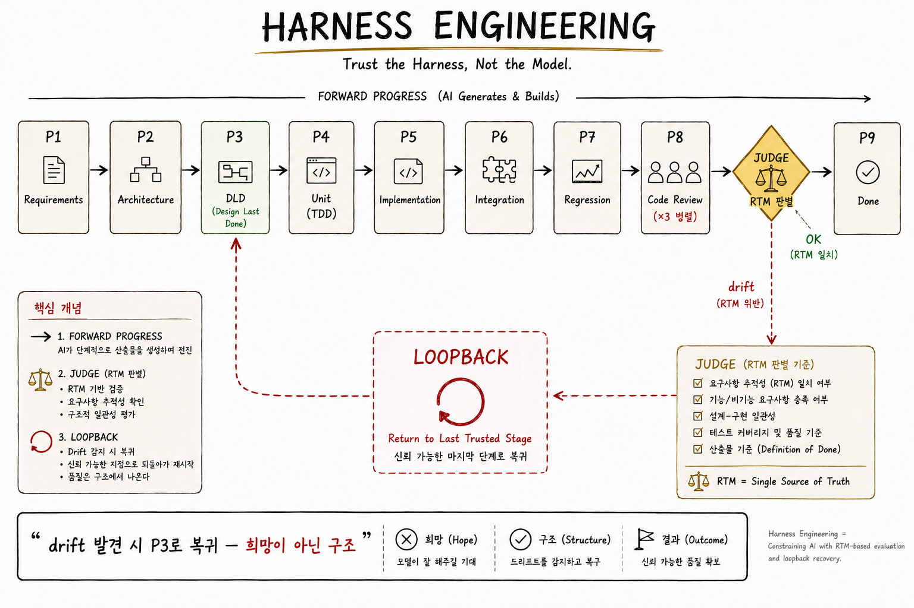

HALO Workflow철학이 구조가 되다
지금까지의 모든 철학, 원리, 마인드셋을 하나의 시스템으로 구현한 것 — HALO Workflow
다섯 편의 여정
이 시리즈를 시작할 때, 우리는 단순한 질문에서 출발했다.
"AI Agent가 개발자를 대체한다는 이야기가 맞는가?"
이 질문에 답하기 위해 다섯 편에 걸쳐 논의를 이어왔다.
시리즈 1. AI Agent의 명확한 한계
→ Needle in a Haystack, Car Wash Test, Blind Context.
AI는 대체재가 아니라 레버리지 도구다.
시리즈 2. 왜 한계가 발생하는가
→ HBM이라는 물리적 제약, KV Cache의 선형 증가,
Context Rot, 멘탈 모델과 컨텍스트 윈도우의 차원 차이.
시리즈 3. Prompt → Context → Harness 엔지니어링
→ 단일 상호작용 → 단일 세션 → 전체 워크플로우.
세 단계는 대체가 아니라 적층이다.
시리즈 4. 나눠서 정복한다
→ Phase 분할 + 추적성(RTM) + LOOPBACK + Gate.
분할 정복의 네 기둥.
시리즈 5. 실행이 10분이 된 세상
→ 병목의 이동. 실행이 싸질수록 판단이 비싸진다.
여섯 가지 마인드셋.각 편이 제시한 철학과 원리가 있다. 이제 마지막 질문이 남았다.
"이 모든 것을 실제 프로젝트에서 어떻게 구현할 것인가?"
그 답이 HALO Workflow다.

HALO라는 이름
HALO는 네 글자의 약자다.
Harness · Agentic · Loopback · Orchestration
각 글자가 시리즈에서 다룬 핵심 개념과 연결된다.
- Harness — 시리즈 3의 결론. AI에게 자유가 아닌 구조를 준다
- Agentic — 시리즈 1, 2의 출발점. AI 에이전트의 한계를 인정하고 제대로 쓴다
- Loopback — 시리즈 4의 핵심. 실패를 구조적으로 복구한다
- Orchestration — 시리즈 4, 5의 종합. 여러 단계와 역할을 조율한다
이름 자체가 이 시리즈의 요약이다. 한계를 인정한다. 구조로 극복한다. 실패를 복구한다. 전체를 조율한다.
전체 구조 — 한 눈에 보는 HALO
HALO Workflow는 9개의 Phase와 단일 RTM(Requirements Traceability Matrix)로 구성된다.
┌───────────────────────────────────────────────────────────────────┐
│ MAIN AGENT — 연속 실행 (8 Phases, 컨텍스트 단절 제로) │
│ │
│ P1 → P2 → P3 → P4 → P5 → P6 → P7 ─┬→ P8 ─→ JUDGE ─→ P9 │
│ 요구 탐색 설계 테스트 구현 IT/E2E 실행 ↓ ↓ │
│ 리뷰 판별 (RTM만) │
│ ×3 ×1 │
│ Sub-Agent Sub-Agent │
│ │
│ LOOPBACK paths (JUDGE → P3/P4/P5/P6) │
│ │
├───────────────────────────────────────────────────────────────────┤
│ RTM (Requirements Traceability Matrix) ← 모든 Phase가 공유 │
├───────────────────────────────────────────────────────────────────┤
│ docs/ tests/ src/ reports/ ← 영구 산출물 (Product Artifacts) │
│ .workflow/ ← 임시 체크포인트 (gitignored) │
└───────────────────────────────────────────────────────────────────┘이 다이어그램 하나가 HALO의 전부다. 하지만 이 안에는 지금까지 다섯 편에 걸쳐 설명한 철학이 모두 녹아 있다.
철학이 어떻게 구조가 되었는가
| 시리즈 | 철학/원리 | HALO 구현 |
|---|---|---|
| 1 | AI는 레버리지 도구다 | Main Agent First — AI가 실행, 인간은 Gate에서 판단 |
| 2 | 컨텍스트는 유한하다 | 9 Phase 분할 — 각 Phase의 컨텍스트를 격리 |
| 2 | Context Rot을 피한다 | File = Interface — Phase 간 통신은 파일로 |
| 3 | 하네스 엔지니어링 | 워크플로우 전체가 하네스 |
| 3 | 세 레이어의 적층 | Phase 안에서 컨텍스트, 컨텍스트 안에서 프롬프트 |
| 4 | 분할 정복 | 9 Phase — 요구사항부터 완료까지 단계별 책임 분리 |
| 4 | 추적성(RTM) | RTM = Single Source of Truth |
| 4 | 구조적 자기수정 | LOOPBACK 4 paths — P3/P4/P5/P6로 복귀 |
| 4 | Gate = 인간 판단 지점 | JUDGE가 구조적 Gate 역할 |
| 5 | 판단은 인간의 몫 | JUDGE는 RTM만 읽는다 |
| 5 | 책임은 인간이 진다 | P9 Report — 최종 승인은 인간 |
HALO의 모든 설계 결정에는 이유가 있다. 그리고 그 이유는 이 시리즈에서 다룬 철학과 원리다.
Main Agent First — 왜 메인이 직접 실행하는가

HALO의 첫 번째 특이점은 메인 에이전트가 대부분의 Phase를 직접 실행한다는 것이다. P1(요구사항)부터 P7(테스트 실행)까지, 그리고 마지막 P9(리포트)까지 — 총 8개의 Phase를 메인이 연속으로 수행한다.
왜 메인인가 — 컨텍스트 단절 비용
많은 AI 워크플로우 시스템이 서브에이전트 중심으로 설계된다. "Phase 1은 Agent A에게, Phase 2는 Agent B에게..." 하는 식이다. 이것은 직관적으로 보이지만, 숨겨진 비용이 있다.
[ 서브에이전트 중심 설계 ]
Phase 1 (Agent A) → 대화 종료, Agent A의 컨텍스트 소멸
↓ (다른 에이전트에게 넘김)
Phase 2 (Agent B) → 새로운 대화, 컨텍스트 처음부터 다시 구축
↓
Phase 3 (Agent C) → 또 새로운 대화, 또 처음부터...이 방식에는 세 가지 문제가 있다.
- 컨텍스트 단절 — 각 에이전트가 전임자의 작업을 "이해"하려면, 전임자의 산출물을 처음부터 읽어야 한다. 추가적인 토큰 소비가 발생한다.
- 판단의 일관성 부재 — Agent A의 판단 스타일과 Agent B의 판단 스타일이 다를 수 있다. 같은 상황에서 다른 결정을 내릴 수 있다.
- 오버헤드 — 매 Phase마다 에이전트를 "시작"하는 비용이 누적된다.
Main Agent First의 해법
HALO는 반대 방향이다. 하나의 메인 에이전트가 P1부터 P9까지 연속으로 실행한다.
[ Main Agent First ]
Main Agent:
Phase 1 수행 → 다음 단계로
↓ (같은 세션 유지)
Phase 2 수행 → 다음 단계로
↓
Phase 3 수행 → ...
↓
Phase 9 완료이 방식의 장점:
- 컨텍스트 단절 제로 — 이전 Phase의 결정이 자연스럽게 다음 Phase로 이어진다
- 판단의 일관성 — 하나의 에이전트가 모든 결정을 내리므로 스타일이 일관된다
- 오버헤드 최소화 — 세션을 계속 유지하므로 재시작 비용이 없다
그런데 Context Rot은?
"잠깐, 시리즈 2에서 긴 세션은 Context Rot이 발생한다고 했잖아?"
맞다. 그래서 File = Interface 원칙이 함께 작동한다.
File = Interface — 컨텍스트를 비워내는 방법
Main Agent First만으로는 부족하다. 하나의 에이전트가 9개의 Phase를 연속 실행하면, 대화 히스토리가 쌓여서 Context Rot이 발생한다.
HALO는 이 문제를 File = Interface 원칙으로 해결한다.
원칙의 핵심
Phase 간의 통신은 대화 히스토리가 아니라 파일로 이뤄진다.
[ 대화 히스토리 기반 통신 — 위험 ]
Phase 1의 결정이 대화 메시지로 존재
Phase 2의 결정이 대화 메시지로 존재
...
Phase 9 시점: 대화 히스토리가 수만 토큰
→ Context Rot 발생
[ File 기반 통신 — HALO ]
Phase 1의 결정 → 파일로 저장 (예: docs/requirements/feature.md)
Phase 2의 결정 → 파일로 저장 (예: docs/architecture/feature.md)
...
각 Phase는 필요한 파일만 읽는다
대화 히스토리는 비워진 상태로 유지메인 에이전트는 각 Phase를 시작할 때 필요한 파일만 읽는다. 이전 Phase의 대화 내용을 컨텍스트에 다시 불러올 필요가 없다. 파일이 구조화된 요약으로 작동하기 때문이다.
세 가지 이점
1. Context Rot 회피. Phase마다 컨텍스트가 리셋에 가깝게 정리된다. 한 세션이지만, 각 Phase의 "작업 컨텍스트"는 작고 집중되어 있다.
2. 복구 가능성. 어떤 이유로 세션이 끊어져도 파일이 남아 있다. 새 세션에서 파일을 읽고 바로 이어서 작업할 수 있다. "파일 = 체크포인트"이기도 하다.
3. 명시적 감사 가능성. 모든 결정이 파일로 남는다. "Phase 3에서 뭘 결정했지?"를 확인하려면 해당 파일을 보면 된다. 대화 로그를 뒤질 필요가 없다.
File = Interface는 단순한 I/O 규칙이 아니다. AI의 물리적 한계를 파일 시스템으로 우회하는 핵심 메커니즘이다.
RTM — 모든 Phase가 공유하는 단일 진실
시리즈 4에서 이야기한 추적성 매트릭스(RTM)가 HALO의 중심이다. HALO의 모든 Phase는 RTM을 업데이트하거나 RTM을 읽는다.
RTM의 흐름
Phase 1: 요구사항 분석
→ RTM에 REQ-ID 등록
→ "REQ-001: 사용자 로그인", "REQ-002: 비밀번호 해싱" ...
Phase 4: 유닛 테스트 작성
→ RTM에 테스트 케이스 매핑
→ "REQ-001 ↔ UT-01, UT-02"
→ "REQ-002 ↔ UT-05"
Phase 5: 구현
→ RTM에 구현 위치 매핑
→ "REQ-001 ↔ auth.ts:45-89"
→ "REQ-002 ↔ hash.ts:12-34"
Phase 6: 통합/E2E 테스트
→ RTM에 IT/E2E 테스트 매핑
→ "REQ-001 ↔ IT-01, E2E-01"
Phase 7: 테스트 실행
→ RTM에 결과 기록
→ "REQ-001: PASS"
→ "REQ-002: FAIL (hash.ts:20 assertion error)"
Phase 8: 코드 리뷰 (×3)
→ RTM에 리뷰 이슈 반영
→ "REQ-002 review: MAJOR — timing attack 가능성"
JUDGE: RTM 판별
→ RTM만 읽고 판단
→ FAIL 또는 CRITICAL 이슈 발견 → LOOPBACK
→ 모두 통과 → P9 (완료 리포트)RTM이 Single Source of Truth인 이유
HALO는 RTM을 단순한 "관리 문서"로 다루지 않는다. RTM은 시스템의 상태 그 자체다.
- 어떤 요구사항이 완료됐는가? → RTM을 본다
- 어떤 테스트가 실패했는가? → RTM을 본다
- 어떤 코드가 어떤 요구사항에서 나왔는가? → RTM을 본다
- 다음에 무엇을 해야 하는가? → RTM을 본다
그리고 가장 중요한 것 — JUDGE는 RTM만 보고 판단한다.
JUDGE — 구조적 판단의 핵심

HALO에는 JUDGE라는 특별한 서브에이전트가 있다. P8 리뷰 이후, P9(최종 리포트)로 넘어가기 전에 호출되는 ×1 에이전트다.
JUDGE의 특징 — "RTM만 읽는다"
JUDGE는 다른 에이전트들과 다르게 작동한다. 전체 코드베이스나 대화 히스토리를 보지 않는다. JUDGE가 보는 것은 오직 RTM 하나다.
[ 일반적인 판단 에이전트 ]
입력: 코드 전체 + 요구사항 문서 + 테스트 결과 + 리뷰 코멘트 ...
(수만 토큰, Context Rot 위험)
처리: 모든 것을 종합해서 판단
[ JUDGE ]
입력: RTM 단일 문서 (수백 줄, 구조화된 정보)
(작은 컨텍스트, 정확한 회상)
처리: RTM에서 FAIL/CRITICAL을 찾아 원인 분류왜 RTM만 보게 하는가
이것이 HALO의 가장 독특한 설계 결정이다. "더 많이 보면 더 잘 판단하지 않을까?"라는 직관에 반한다.
답은 세 가지다.
1. Context Rot 방지. JUDGE가 모든 것을 보려 하면 컨텍스트가 폭발한다. 큰 코드베이스에서는 애초에 다 담기지 않는다. RTM만 보면 항상 작은 컨텍스트로 작업하므로 정확성이 유지된다.
2. 판단의 일관성. JUDGE가 매번 다른 정보를 보면 판단이 달라질 수 있다. RTM만 보면 같은 상태에서 항상 같은 판단이 나온다. 재현 가능성이 보장된다.
3. RTM의 품질을 강제한다. JUDGE가 RTM만 본다는 것은, RTM이 충분히 잘 작성되어 있어야 JUDGE가 올바른 판단을 할 수 있다는 뜻이다. 이것이 거꾸로 이전 Phase들에게 "RTM을 제대로 업데이트하라"는 강한 압력을 만든다. 시스템 전체가 RTM의 품질을 중심으로 정렬된다.
JUDGE의 판단 — LOOPBACK 분류
JUDGE는 RTM에서 실패를 발견하면 원인을 분류하고 적절한 Phase로 LOOPBACK을 지시한다.
JUDGE의 분류 → LOOPBACK 대상
────────────────────────────────
Test Bug (assertion error, 잘못된 예상값) → P4 (Unit Test)
Impl Bug (로직 오류, 미처리 예외) → P5 (Implement)
Test Design (E2E 시나리오, 환경 문제) → P6 (IT/E2E Test)
Arch Issue (인터페이스 불일치, 설계 결함) → P3 (Architecture)이 네 가지 분류가 있는 이유는, 실패의 종류마다 돌아가야 할 Phase가 다르기 때문이다. 구현 버그를 설계 단계부터 다시 시작하면 낭비다. 설계 결함을 구현에서 고치려 하면 근본 해결이 안 된다.
JUDGE는 실패의 종류를 정확히 분류해서 최소한의 재작업으로 문제를 해결한다.
LOOPBACK 정책 — 실패를 허용하되 제한한다
시리즈 4에서 LOOPBACK의 무한 루프 방지를 이야기했다. HALO에는 구체적인 정책이 있다.
제한 규칙
전체 LOOPBACK: 최대 5회
같은 Phase LOOP: 최대 2회
제한 초과 시: Partial Report → P9로 강제 이동왜 "같은 Phase 2회" 제한인가
같은 Phase를 두 번 돌았는데도 실패한다면, 문제는 그 Phase에 없다. 상위 Phase에 있을 가능성이 높다.
예시:
1회차: 구현(P5)을 수정했지만 테스트 실패
2회차: 구현(P5)을 다시 수정했지만 또 실패
→ 결론: 구현 문제가 아니라 설계(P3) 문제일 가능성
→ 에스컬레이션: P5가 아니라 P3로 돌아간다이것은 AI의 근본적 한계를 시스템 레벨에서 인정하는 설계다. AI가 같은 Phase에서 두 번 실패했다면, 그 Phase의 정보만으로는 해결할 수 없는 문제라는 신호다. 더 상위로 올라가야 한다.
"요구사항은 바꾸지 않는다"
HALO의 중요한 원칙 중 하나다.
LOOPBACK은 요구사항을 바꾸지 않는다.
LOOPBACK은 설계, 테스트, 구현의 오류를 수정한다. 하지만 요구사항 자체가 잘못됐다면, 그것은 새로운 사이클이다. LOOPBACK으로 해결할 수 없다.
이유는 명확하다. 요구사항이 바뀌면 RTM 전체가 다시 쓰여야 한다. 그것은 더 이상 "복구"가 아니라 "새로운 프로젝트"다. 섞어서 처리하면 추적성이 무너진다.
요구사항 변경 = 새 사이클
구현/설계/테스트 오류 = LOOPBACK
이 경계선이 명확해야 시스템이 일관되게 작동한다.
두 개의 서브에이전트 지점
HALO는 "Main Agent First"를 원칙으로 하지만, 두 지점에서는 서브에이전트를 사용한다.
지점 1: P8 Code Review (×3 병렬)
코드 리뷰는 여러 관점이 필요한 작업이다. 같은 코드를 보더라도 관점에 따라 발견하는 문제가 다르다.
P8 서브에이전트 ×3:
Agent 1: Quality — DRY, 가독성, 유지보수성
Agent 2: Bugs — 로직 오류, 엣지 케이스
Agent 3: Security — OWASP, 컨벤션, 취약점세 에이전트가 병렬로 리뷰한다. 각자 독립된 관점으로 코드를 본다. 이것을 Main Agent 혼자 하면 관점이 섞여서 집중도가 떨어진다.
지점 2: JUDGE (×1)
앞에서 이야기한 JUDGE. 독립된 판단자로서 작동하기 위해 별도 에이전트다. Main Agent와 분리되어 있어야 "Main Agent가 자기 작업을 스스로 평가하는 편향"을 피할 수 있다.
"왜 여기만 서브에이전트인가"
이 두 지점의 공통점이 있다. "메인이 혼자 하기 어려운 판단"이다.
- P8: 여러 관점이 필요 → 병렬로 나눠야 효과적
- JUDGE: 독립성이 필요 → 자기평가 편향을 피해야
나머지 Phase들은 메인이 혼자 연속 실행하는 것이 가장 효율적이다. 컨텍스트 단절 없이, 이전 결정을 자연스럽게 이어가며 작업한다.
HALO의 서브에이전트 사용은 "무조건 병렬이 좋다"는 미신에 빠지지 않는다. 필요한 곳에만, 필요한 이유로 사용한다.
Constraint Verification — 거짓 성공을 막는다
HALO의 P1(요구사항)에는 특이한 단계가 있다. Constraint Verification(제약 검증)이다.
무엇인가
요구사항에 명시된 외부 의존성을 실제로 호출해서 검증한다.
- API 엔드포인트가 실제로 존재하는가?
- 데이터베이스 연결이 가능한가?
- 특정 라이브러리 버전이 정말 설치되어 있는가?
- 배포 환경의 가정이 맞는가?
왜 필요한가
AI는 "그럴듯하게 존재할 것 같은" 것들을 실제로 있는 것처럼 다루는 경향이 있다. 훈련 데이터에 비슷한 API가 있으면, 실제로 그 API가 존재하는지 확인하지 않고 사용한다.
결과는? 프로젝트 끝에 가서야 "그 API는 존재하지 않는다"는 것을 발견한다. 모든 설계와 구현이 무너진다.
Constraint Verification은 프로젝트의 가장 앞단에서 이 위험을 차단한다. "이 API를 쓸 거라면, 지금 호출해보자"라고 한다. 실제로 작동하면 OK. 작동하지 않으면 요구사항을 수정하거나 대안을 찾는다.
가정은 검증되기 전까지는 가정일 뿐이다.
AI는 가정을 사실처럼 다루는 경향이 있다.
Constraint Verification은 이것을 시스템 레벨에서 차단한다.
Real E2E — Mock 금지

HALO의 또 다른 강한 원칙이 있다. E2E 테스트는 실제 환경에서 실행한다. Mock은 금지다.
왜 이렇게 강한가
AI가 작성한 코드는 단위 테스트에서는 종종 통과한다. 단위 테스트는 Mock으로 외부 의존성을 가짜로 만들기 때문이다. 이 가짜는 "AI가 가정한 대로" 작동하도록 설정된다. 그래서 AI가 잘못된 가정을 했어도 단위 테스트는 통과한다.
진실은 E2E 테스트에서 드러난다. 실제 데이터베이스, 실제 API, 실제 네트워크와 연결됐을 때, AI의 가정이 무너지는 순간이 나타난다.
Mock된 E2E는 거짓 성공을 만들어낸다.
AI의 가정이 틀려도 Mock이 덮어주기 때문이다.
실제 환경에서 실행해야만 진짜 문제를 발견할 수 있다.
이것은 시리즈 1에서 이야기한 "Blind Context" 문제와 연결된다. AI는 자신이 모르는 것에 대해서는 편리한 가정을 만든다. 그 가정이 맞는지 확인하는 유일한 방법은 실제 환경이다.
전체를 관통하는 비유 — 보조주행
이제 지금까지의 모든 것을 하나의 비유로 정리할 수 있다.
HALO Workflow는 AI 에이전트를 위한 "보조주행 시스템"이다.
| 자율주행 (AI가 전부) | 보조주행 (HALO) | |
|---|---|---|
| 결정 | AI가 모든 결정 | Phase별로 AI가 실행 |
| 실패 시 | 시스템 전체 위험 | Gate에서 인간이 판단 |
| 추적 | 불가능 | RTM으로 추적 가능 |
| 복구 | 처음부터 | LOOPBACK으로 구조적 복구 |
| 검증 | — | 제약 검증으로 사전 차단 |
| 테스트 | — | Real E2E로 거짓 성공 방지 |
Tesla Autopilot을 직접 만든 Andrej Karpathy조차 이렇게 말한다.
"아이언맨 로봇을 만들지 말고, 아이언맨 슈트를 만들어라."
로봇(자율주행 AI)이 아니라, 슈트(보조주행 도구). 인간의 능력을 증폭시키는 것이지 대체하는 것이 아니다.
HALO Workflow는 이 비유의 실체화다. 에이전트가 Phase를 실행하는 동안, 개발자는 핸들을 잡고 있다. 핸들을 잡고 있다는 것이 수동적 대기가 아니다. 능동적 판단이다.
- RTM을 보면서 진행 상황을 파악한다
- JUDGE의 판별 결과를 확인한다
- P8 리뷰에서 나온 이슈를 검토한다
- Gate에서 다음 Phase로의 진행을 승인한다
- 필요하면 LOOPBACK의 방향을 지시한다
AI가 실행을 담당하지만, 운전의 책임은 여전히 개발자에게 있다. 그리고 이 구조가 HALO의 모든 설계에 녹아 있다.
시리즈 전체 회고
이 긴 여정에서 우리가 확인한 것은 단순하다.
AI의 한계는 물리 법칙에서 나온다 (시리즈 1, 2)
↓
그 한계를 구조로 극복하는 것이 엔지니어링이다 (시리즈 3)
↓
구조의 핵심은 분할 정복과 추적성이다 (시리즈 4)
↓
구조를 운용하는 사람의 판단이 가치를 만든다 (시리즈 5)
↓
이 모든 것을 하나의 시스템으로 → HALO Workflow (시리즈 6)HALO는 "더 똑똑한 AI"가 아니다. "AI가 더 똑똑해지길 기다리지 않는 방법"이다.
현재의 AI가 갖는 물리적 한계 — 유한한 컨텍스트, Context Rot, Blind Context — 를 인정한다. 그리고 그 한계 안에서 최대의 가치를 끌어낼 수 있는 구조를 만든다. Phase로 나누고, RTM으로 잇고, LOOPBACK으로 수정하고, JUDGE로 판별하고, Gate에서 인간이 승인한다.
이것은 "AI를 잘 쓰는 법"이 아니다. "AI 시대의 엔지니어링이 무엇인가"에 대한 답이다.
마지막 말
시리즈 5에서 이런 말을 했다.
흔들리지 않는 개발자가 되는 법은 간단하다. 본질을 알면 된다.
그리고 시리즈 1에서 이런 말도 했다.
더 좋은 망치는 더 좋은 목수의 손에서 가치를 발휘한다.
HALO Workflow도 마찬가지다. 이 시스템이 아무리 정교하게 설계되어 있어도, 본질을 이해하는 개발자의 손에서만 진짜 가치를 발휘한다.
- AI의 물리적 한계를 이해하는가
- 프롬프트/컨텍스트/하네스의 레이어를 이해하는가
- 분할 정복의 원리를 이해하는가
- 실행이 아닌 판단이 가치의 원천임을 이해하는가
이 질문들에 "yes"라고 답할 수 있는 개발자에게, HALO Workflow는 강력한 망치다. 그렇지 않은 개발자에게는, 그저 복잡한 워크플로우 문서일 뿐이다.
AI Agent 시대는 도구의 시대가 아니다. 판단의 시대다. 그리고 판단은 본질에서 나온다.
본질을 아는 사람에게, AI는 위협이 아니라 레버리지다.
본질을 아는 사람에게, HALO는 시스템이 아니라 사고의 확장이다.
이 시리즈가 그 본질로 가는 지도가 되길 바란다.
HALO Workflow
Harness · Agentic · Loopback · Orchestration
실행이 싸질수록 판단이 비싸진다.
그 판단을 증폭시키는 것이 HALO의 존재 이유다.